☕Coffee Brewing Methods
#1 - The Espresso Machine
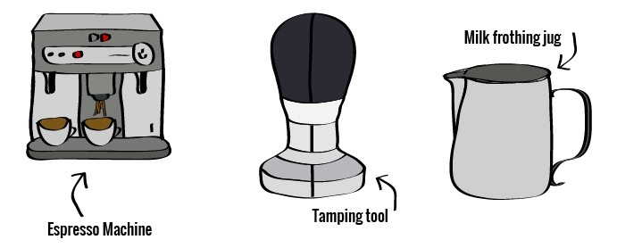
Time: from Bean > Brew: It depends on your machine.
A commercial machine may need 15-40 minutes to warm up, and a home-based machine may
take only 3 minutes. Once warm, however, you’ll have your fix in 20-30 seconds.
Type of grind required: You’ll need a fine, consistent grind. Here’s a trick of the trade:
pinch your grind and observe what happens (it should clump in your fingertips). Too coarse
and it won't clump at all, too fine and it will clump excessively. Looking for a burr
grinder to handle espresso? We cover the seven best in this article.
Resulting brew: A shot of espresso, when done right, is strong, sharp and full of
flavor (it should not be bitter)
Skill level required: It all depends on your machine - some will make a great shot
almost automatically, others (the more commercial, manual types) will require a high
level or skill, hence the need for Batista schools.
| BEST SUITED FOR YOU: If you like a milky brew (e.g.
a latte) or if you’re the type that likes a quick and sharp hit of caffeine.
Espresso's are unique - no other machine can replicate a nice espresso shot. |
| NOT SO GREAT FOR: If you prefer a subtle tasting brew,
if you don’t want to spend hundreds of dollars on a coffee maker, or don’t have space
for a machine (perhaps you travel often?), an espresso machine will just be extra
baggage in your life. |
| PROS |
CONS |
- Fast to brew (once warmed up)
- Range in price (and quality) from relatively cheap to super expensive
- Brew highly concentrated, sharp caffeine brew
|
- Cheaper machines tend to give you less than ideal results
- Take up kitchen counter space
- An absolute bitch to clean
|
#2 - The Moka Pot
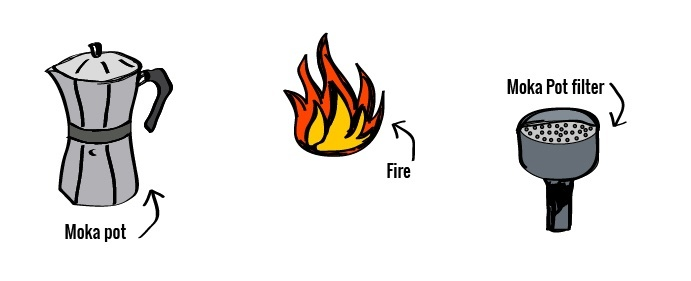
Time: from Bean > Brew:Super fast – Once you've heated your water it
should take no more than 5 minutes (a little longer if you use an induction stove). For
that reason, it's the go-to option for caffeine deprived people when in a morning rush.
Type of grind required:This is the tricky part. As a rule, you want
it coarser than a fine, espresso like grind, and finer than a drip coffee grind. If that
doesn't help - the best way to achieve the right grind is through trial and error –
start coarse, and go finer until the texture & taste of the end result is right for you.
Rule of thumb:if your brew is too weak/watery, you’ve gone too course
(under-extracted). Too bitter, and you’ve gone too fine (over-extracted)
Resulting brew:Not quite an espresso shot, but close to it (if you
use the right grind and the right technique). Expect a sharp and strong tasting coffee.
Skill level required:You don’t need to be a barista of any kind –
once you have the right grind (which is the hardest part) it’s a relatively simple
process – just fill the chambers, turn on the heat and keep a close eye on it.
| BEST SUITED FOR YOU: If you’re on a budget, or want something super portable but
are not a fan of the ‘clean and thin’ tasting brew from drip coffee. |
| If you love the taste and texture of a shot of espresso. The
resulting brew is strong (even a little harsh) so if that’s not your style,
keep looking. |
| PROS |
CONS |
- Super cheap coffee maker
- Quick to brew
- Very portable – you can even get mini pots that are perfect for traveling.
|
- Some say the brew tastes like ‘an espresso shot from 15 years ago’ (i.e. low quality)
- The risk of over and under extraction is high (depending on your grind finesse)
|
#3 - The Aeropress
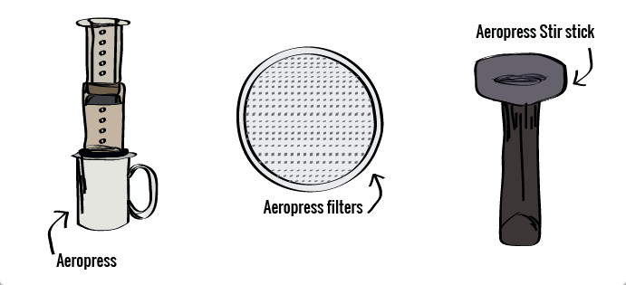
Time: from Bean > Brew:There are a few ways to make a coffee
Aeropress style, but if you’re in a rush, it can be done in 60 seconds once your water
is hot enough. It’s worth mentioning here too that cleanup is a dream.
Type of grind required:Here’s the cool part – it does not matter!
You’ll get a different result based on your grind, so you should choose the right grind
size based on your mood! Kaffeologie has an excellent guide to Aeropress grind settings
right here.
Resulting brew:Beautiful in color and taste. It’s more of a ‘clean’
tasting coffee (different from the French press or Moka pot). If we were to describe it
in 4 words: Smooth, Rich, Pure and Fast
Skill level required:Even your cat could use it – it's that easy to
use. Don’t get lazy though, once you master the regular Aeropress brew, you can start
trying other methods and techniques of brewing.
| BEST SUITED FOR YOU: If you’re a traveler or just
someone who appreciates a quick, clean and great tasting coffee. Or perhaps you love
camping? The AeroPress ticks all the boxes. |
| NOT SO GREAT FOR YOU: We may sound biased in saying
this, but everyone should own an Aeropress (everyone that drinks coffee, that is). If you
don’t like the idea of wastage and using paper filters, then perhaps it's not right for
you. |
| PROS |
CONS |
- Very portable – take it anywhere, without the risk of breaking it
- The ability to customize your brew is high (have some fun with it)
- Makes a great, clean cup of coffee
|
- Paper filters are required, which requires waste
- You can only make two coffees per rotation, so if you're making coffee for a few
people it can get tedious
|
#4 - The French Press
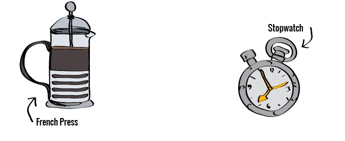
If you're into the French Press, make sure you use something quality, and make sure
you use the right coffee grind
as this little known but super common mistake taints French Press coffee all over the world.
Time: from Bean > Brew: It's not super quick, but not super slow either.
From (almost) boiling the water, to steeping and plunging, you’ll need about 10 or so minutes.
While steeping, however, your French press will need your undivided attention.
Type of grind required:A course grind is the only way to go. Too fine a grind
means you’ll have particles stuck in the filter and passing into the finished brew, adding to
over-steeping and leaving you with a bitter mess.
Resulting brew:A unique, non-harsh aromatic coffee that’s full of flavor,
particular to your beans. It will, however, be a little sediment-y, so avoid drinking the last few
sips of each cup
Skill level required:Making a French press is an easy task. Making the perfect
French press is a little harder. All-in-all, if you follow a very clear set of instructions, such
as these, you’ll get what you’re looking for, no problems.
| BEST SUITED FOR YOU: If you love the unique brew you get from
a French Press, or if you have a lot of caffeine fiends to fix up (e.g. a full household) |
| NOT SO GREAT FOR YOU: If you’re a frequent traveler - they are
made from glass (most of the time – stainless steel options are available) |
| PROS |
CONS |
- Distinct and unique flavor
- Easy to use with the right advice
- Ability to make large pots of coffee without having to repeat the process
|
- Taste may not be your cuppa tea
- Steeping is hard to perfect and is a standard screw up with the French press
|
#5 - The SoftBrew
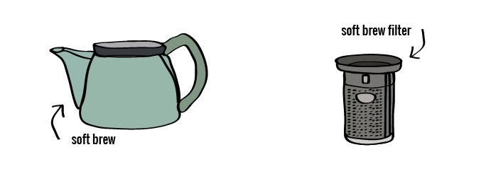
Time: from Bean > Brew:Once you have your hot water, it takes 4-8 minutes.
Type of grind required:Anything goes – you can use any size you desire. Get
experimenting!
Resulting brew:Similar to a French press. The special filter purposely allows
ground smaller than 150 microns (AKA damn tiny) which give the resulting brew depth, flavor and
body. It's like a French press, but cleaner.
Skill level required:Zero. You could brew an excellent coffee with the SoftBrew
with your eyes closed and your hands bound. That’s the way it was intended to be.
| BEST SUITED FOR YOU: If you’re not into the whole fussy side of
specialty coffee movement (i.e. you’re are not a coffee hipster), and if you appreciate an-easy-to-brew
coffee that tastes better than that instant coffee BS. |
| NOT SO GREAT FOR YOU: If you enjoy mixing your brew style up and
being a little creative with how you brew. If that sounds like you, this thing will bore the heck out
of you. |
| PROS |
CONS |
- Verrrrrrry easy to use
- Relatively fast
- Comes in a range of sizes
|
- Made from ceramic pieces, therefore, its not suited to traveling (it's too darn fragile)
|
#6 - The Coffee Bag
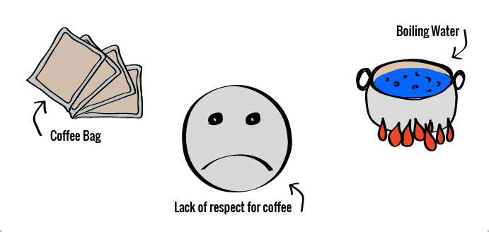
Time: from Bean > Brew:Regarding speed of the overall process, it's as quick as
brewing comes. Your brew will be ready in 3-4 minutes. No grinding or preheating required.
Type of grind required:If you buy pre-made coffee bags its not up to you.
If you make your own however, go for a medium-fine grind (any size will work – but the finer,
the more flavor you’ll get)
Resulting brew:Nothing fantastic since your beans will not be freshly ground
or stored correctly, but it still beats an instant coffee.
Skill level required:What it takes to make tea
| BEST SUITED FOR YOU: If you hate instant coffee but still need
a caffeine fix on the road/while traveling. |
| NOT SO GREAT FOR YOU: If you like the process of brewing their
own coffee, or despise of non-freshly ground coffee (that's us) |
| PROS |
CONS |
- No expensive coffee making gadgets required
- Super portable
- Cheap – just ask for a cup of hot water (on the
plane or when driving through) and you’ve almost got a free cup of coffee
|
- Forget about that ‘freshly ground beans’ taste
- Wastage – mother nature will hate you
|
#7 - The Vacuum Pot (aka Siphon Coffee)
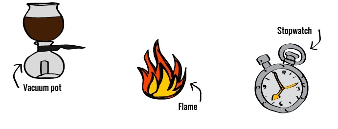
Time: from Bean > Brew:Allow yourself about 10 minutes. We must note here;
cleaning the siphon pot is a bitch.
Type of grind required:You’ll want a medium/course grind for best results, similar
to that of a Chemex brew.
Resulting brew:Very clean and full of flavor – when done correctly. Since your
brew is only touching glass, it will be the purest tasting coffee you sip in a while.
Skill level required:Its quite involved and you’ll need to follow steps
carefully. If you’re a scientist, or you happen to cook meth, you'll have no trouble.
| BEST SUITED FOR YOU: If you’re really into your coffee making
gadgets and want to try something wild. Its out there! |
| NOT SO GREAT FOR YOU: If you appreciate a quick and easy way to
brew coffee. You’ll hate this. |
| PROS |
CONS |
- When done right it produces the best tasting coffee, according to some experts
- Your friends will think you’re a total coffee expert
|
- It's an advanced brewing method. Prepare to make mistakes
- Very fragile – don’t expect to take it anywhere
- If you just want a coffee, this thing is a pain in the arse
|
#8 - The Electric Percolator
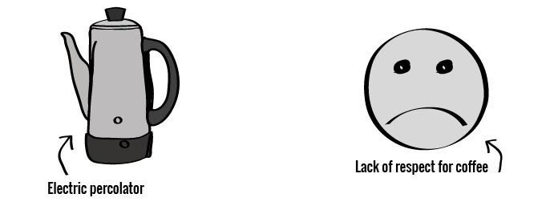
Time: from Bean > Brew:You are supposed to let the percolator percolate for 10
minutes, however, this is a great way to ruin your coffee; try 3-4 minutes for better results.
Type of grind required:You’ll want to use a course grind. Using a fine grind
will completely ruin an already damaged coffee.
Resulting brew:Nothing special. If you apply a little skill by using a course
grind and letting it percolate for no longer than 4 minutes it will be drinkable, but you won’t
waking up excited to drink it.
Skill level required:No skill required. Just put in the coffee and water and
turn it on.
| BEST SUITED FOR YOU: If you don’t care how your coffee tastes
and you are just in it for the caffeine. Its quick and easy. |
| NOT SO GREAT FOR YOU: Anyone who respects the coffee bean. |
| PROS |
CONS |
- Quick and easy
- Fills your home with that ‘lovely coffee smell'
|
- Poor way to brew coffee – bitter and hot
- Must be cleaned often for flavour and health reasons
|
#9 - The Chemex
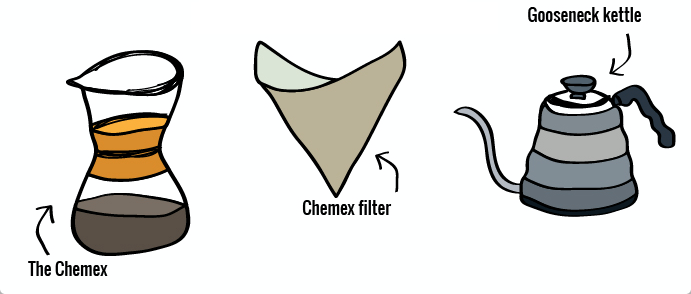
The primary benefit of using a Chemex over other drippers is capacity – you can easily make 3 or
4 cups in one go, rather than 1 of 2, meaning it’s a crowd pleaser when the possy is around. In
fact, you can buy a 10-cup Chemex that takes 50 ounces of water. It's an entertainer's best friend.
Time: from Bean > Brew:Coming in at 3 and a half minutes from after setting it up means it’s a fast way to get a great coffee into ya.
Type of grind required:Play around here to suit your preference, but ideally anywhere between medium to course, closer to the medium side of things
Resulting brew:Chemex filters are roughly 30% thicker than the filters used by other drippers, meaning you’ll get a richer tasting cup of coffee. Think French press, without the sediments.
Skill level required: There are many ways to screw up a Chemex brew leaving you with an over or under extracted brew. You’ll need some practice.
| BEST SUITED FOR YOU: If you like the pour-over coffee movement, and if you want something that can also double a piece of art (it's displayed in Art Museums). You’ll love the fact that it can brew 3-4 cups at one time. |
| NOT SO GREAT FOR YOU: If you only need to brew for one or two coffees in the morning, or if you like to travel with your brewer. |
| PROS |
CONS |
- Make 3-4 cups in one go
- Very rich and aromatic brew
- The best looking way to brew coffee
|
- High chance of over and under extraction
- It's overkill if you just need 1-2 coffees
|
#10 - The Hario V60 Dripper
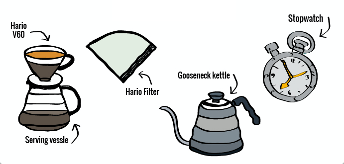
The Hario v60 is a simple yet brilliant way to brew coffee – its small and light, meaning you can take it just about anywhere, and it makes a damn good cup of joe.
Throw in your paper filter, your grounds and away you go. Like most pour over methods there is a technique to getting the perfect brew, but after a few runs, you’ll have it nailed.
Time: from Bean > Brew:30 seconds to bloom and 3 minutes to pour means you’ll be sinking that coffee in less than 5 minutes. Tight.
Type of grind required:Medium-fine will do the trick
Resulting brew:Expect a rich flavored brew (taste those coffee beans) with no signs of bitterness. A refreshing cup of coffee.
Skill level required:The process is very straightforward. Be aware that there is room for error depending on how you pour. The advantage of this is you get complete control over your brew, meaning you can customize your coffee for taste if you’re feeling adventurous.
| BEST SUITED FOR YOU: If you move around often (camping or backpacking) but don’t want to be caught high and dry and forced to drink instant on the road. At 2.94 ounces the V60 is featherweight a great addition to any coffee fanatics brew kit. Perfect for when you want a quick drip style coffee in the morning. |
| NOT SO GREAT FOR YOU: If you're the type that prefers just to push a button and get a coffee. |
| PROS |
CONS |
- Creates a quality brew, fast
- Super easy to clean
- Very very affordable (from $9)
|
- Uses special filters which need to be ordered online (make sure you don’t run out first)
|
#11 - The Kalita Wave Dripper
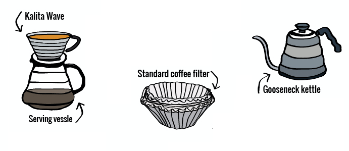
Time: from Bean > Brew:a 3-minute process, with a little extra (30-50 seconds) for the bloom means it's quick.
Type of grind required:A fine grind, similar to the consistency of table salt
Resulting brew:The result is a rich, clean flavored coffee, similar to most pour over drippers.
Skill level required:The design of this dripper means there is less margin for error, so it's very straightforward. Mastering this dripper is all in the slow spiraling pour.
| BEST SUITED FOR YOU: If you’re into the pour over coffee movement and want something small, light that consistently gives you an excellent brew (even on those days where you suck at brewing). |
| NOT SO GREAT FOR YOU: If you want more control over your brew when dripping. Try the Hario v60 instead. |
| PROS |
CONS |
- Creates a quality brew, fast
- Super easy to clean
- Very very affordable (from $9)
|
- Uses special filters which need to be ordered online (make sure you don’t run out first)
|
#12 - The Vietnamese Drip Filter
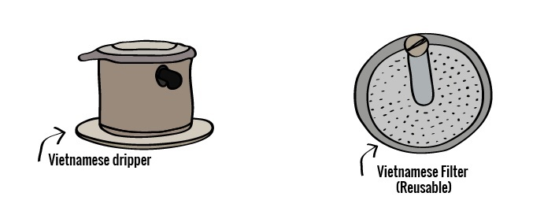
Time: from Bean > Brew:4-5 minutes and your brew will be ready.
Type of grind required:Fairly course – think French press but a touch finer.
Resulting brew:Unique – it's got less bite than an espresso, but it's much smoother and cleaner than a French press. No paper filters means the oils will pass through to the brew, much like a French press.
Skill level required: Just follow a set of simple instructions and you’ll master it in no time – it's nowhere near as involved as other drippers.
| BEST SUITED FOR YOU: If you want a single serve dripper that does not require you to master the latest in pouring techniques. If you’re a fan of Vietnamese iced coffee, you’ll need one of these. |
| NOT SO GREAT FOR YOU: Since it's a single serve gadget, you’d be crazy to adopt it as your office or household coffee maker (where you household consists of more than 1-2 coffee fanatics) |
| PROS |
CONS |
- Easy to master
- Perfect for single serve coffee
- Light, portable and durable
|
- Only brews one cup at a time
- Lack of paper filter means you’ll get a little ‘sludge’ in the bottom of your cup (especially if your grind is too fine)
|
#13 - The Melitta Ready Set Joe Dripper
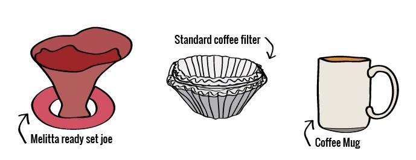
Time: from Bean > Brew:4-5 minutes and you're caffeinated.
Type of grind required:Medium fine works best.
Resulting brew:Nothing amazing like a more advanced dripper, but it's still better than cowboy coffee.
Skill level required:Not much at all – it's about as simple as they come.
| BEST SUITED FOR YOU: If you're a Camper, backpacker, or a bargain-hunter. |
| NOT SO GREAT FOR YOU: If you love the clean taste of a more advanced dripper. This will not impress you. |
| PROS |
CONS |
- Cheap – you can pick one up for pocket change (literally)
- Very portable and light
- Very easy to clean
|
- Nothing amazing in terms of brewed coffee (its plastic)
- Only makes one serving per brew
|
#14 - The Bee House Dripper
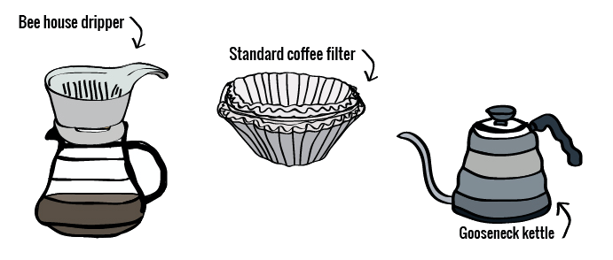
The Bee house is another Japanese pour over brewer that is getting a great deal of attention in the coffee world – likely because it's easy to use, makes a great darn drip and looks sexier than most drippers combined
Time: from Bean > Brew:You’ll be aiming for a brew time of 3 to 3 and a half minutes.
Type of grind required:Medium fine is ideal – a little finer than your standard drip coffee grind (similar to table salt)
Resulting brew:You’ll get a clean and clear tasting coffee (like you would with most drippers) however, since it drains a little slower than other methods you can expect more flavor – Stumptown describes it as a ‘clean and sweet cup character.'
Skill level required:Practice will do you well but mastering the Bee house is much easier than mastering other tricky drip brewing methods.
| BEST SUITED FOR YOU: If you love a great looking dripper – it will fit well into any kitchen pace. |
| NOT SO GREAT FOR YOU: If you like to take your gear traveling; the ceramic material is of course not ideal for traveling with. |
| PROS |
CONS |
- Uses standard filters meaning most grocery stores will stock them (if you happen to run out)
- Made from ceramic which holds heat for longer than plastic
|
- The ceramic could be easily broken – be careful!
|
#15 - The Clever Dripper
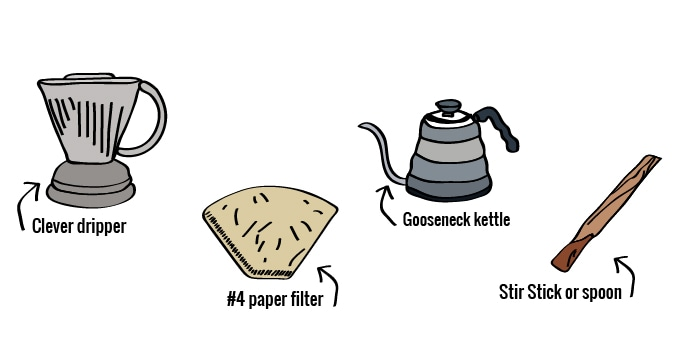
It looks like just another pour over dripper (not that there is anything wrong with pour over dripper) but on closer inspection you’ll notice that the clever dripper is a cross between a steeping and pour over brewer.
Time: from Bean > Brew:It depends on your mood. 3-4 minutes is the minimum but let it steep for longer if that's how you roll
Type of grind required:A medium/fine grind is ideal, however since you control the time, you can play around with this a little.
Resulting brew:Some love it and say you get the best of the french press and drip (minus the drawbacks) and some hate it, saying its nothing special. Tastes like good old pour over brew to us
Skill level required:Follow the steps and timing, and you will master the basics of it in no time
| BEST SUITED FOR YOU: If you like pour over coffee and want to try something a little cutting edge |
| NOT SO GREAT FOR YOU: If you like the finer things in life (like the Chemex) this will not impress you. It seems cheap and plastic-y. |
| PROS |
CONS |
- Easy to use & clean
- Suitable for travel
- Cheap
|
- Even though its plastic, it seems cheap and fragile
- Not the most beautiful dripper in your arsenal
|
#16 - Cold Drip Brewing (aka Cold Brew)
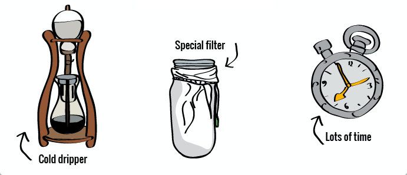
Is it just like hot coffee, but cold? Hell no. In the end, your patience will be rewarded with a strong, intense, unique tasting coffee with a super smooth finish - no acidity or bitterness. There’s no need to ‘enhance’ the flavor with milk or sweeteners, meaning you can taste the real origins of the coffee bean and where it comes from.
Time: from Bean > Brew:10-24 hours. Patience is a virtue.
Type of grind required:Coarse – think thick sand
Resulting brew:It’s a strong and intense flavored brew, but without any form of bitterness. The full flavors of the coffee bean will be on display. Best of all, its got a super smooth aftertaste.
Skill level required:Just get the grind right, set up your cold dripper as it was intended and you’re good to go.
| BEST SUITED FOR YOU: If you live somewhere hot (you need this.) Its also an excellent option for anyone who experiences the typical sharp peak and crash from a standard coffee. Cold drip coffee gives you the caffeine high without the crash – keeping you mentally alert, yet calm. |
| NOT SO GREAT FOR YOU: If you're an impatient bastard. Its slooooow. |
| PROS |
CONS |
- Unique tasting brew without any bitterness
- No caffeine crash
- Make extra and store it in the fridge
|
- Takes time and requires patience
|
#17 - Nitrous Coffee (nitro)

As the name suggests, its' (cold brewed) coffee, pumped full of Nitrogen, which affects the taste and the texture, in a very, very nice way. The result is similar to a cold brew coffee but crisper, a little sweeter and it looks like a pint of Guinness
Time: from Bean > Brew:If you’re looking at making your own, you’ll first need to brew cold brew (and you’ll need more than a few cups) which can take days or even weeks depending on your system. Once you have your cold brew and your system set up – it's like pouring a beer – its instant.
Type of grind required:See cold brew
Resulting brew:A crisp, light, and creamy drink which almost looks like a frothy beer. The already high cold brew caffeine levels, combined with the nitrogen (which may absorb caffeine into your bloodstream faster) means it packs a serious energy punch.
Skill level required:Setting up a home system and perfecting the pour will be tricky
| BEST SUITED FOR YOU: If you like cold brew (you'll LOVE this) |
| NOT SO GREAT FOR YOU: If you like hot, flat coffee. |
| PROS |
CONS |
- Packs a noticeable caffeine punch
- It’s a very light, creamy and refreshing way to drink cold coffee
- No need to add milk or sugar – hence its healthier than an ordinary coffee
|
- It's not exactly easy to make it yourself and requires investment in equipment and time.
|
#18 - The Cowboy Method
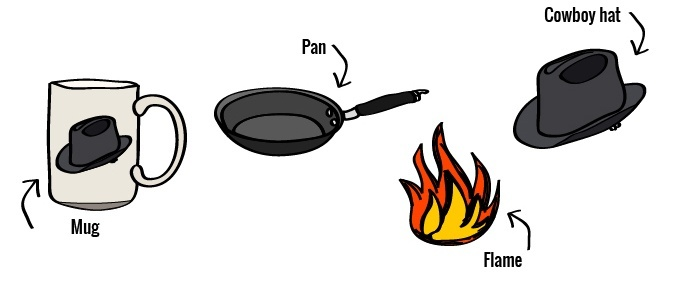
Time: from Bean > Brew:Once your water has boiled, you’ll need 4-5 minutes to brew your coffee, a few more to let the grinds settle, and a few more to pour with a steady hand. You’re looking at 10 minutes plus, but nobody said it would be quick, did they?
Type of grind required:Medium – course is ideal, and anything larger. Just don’t add fine grounds or you’ll be drinking a silty, sludgy mess.
Resulting brew:It's very hit and miss depending on your timing, your grind and every other variable involved. That being said, it's still better than instant, but you wouldn’t find it served in coffee shops (or would you?)
Skill level required:Can you boil and egg? If so, you’ve already graduated from cowboy coffee brewing school.
| BEST SUITED FOR YOU: If you lack the funds to invest in any form of coffee brewing apparatus. |
| NOT SO GREAT FOR YOU: It’s a messy brewing process, so if that scares you, double check that your single serve dripper is packed in your camping luggage. |
| PROS |
CONS |
- You don’t need any fancy accessories, so you can just about do it anywhere
- You’ll feel like Bear Grylls
|
- It's nothing special
- There's a very good chance you’ll burn your coffee, and yourself
|
#19 - Turkish Coffee
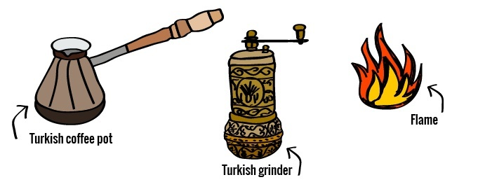
Brewing Turkish Coffee seems easy, but with like most brew methods, there’s skill in doing it right. The most common way involves a Turkish coffee pot, water and very finely ground coffee beans.
Time: from Bean > Brew:3-4 minutes for one cup. It's quick.
Type of grind required:The finest grind you can get. Almost powder. You'll need a special grinder to achieve this.
Resulting brew:Very aromatic, quite sharp, and thick. If you like strong black coffee, you’ll love Turkish coffee
Skill level required:Not much at all, it's fairly straightforward.
| BEST SUITED FOR YOU: If you're a lover of black and strong tasting coffee. It’s a great way to get a brisk morning pick me up. |
| NOT SO GREAT FOR YOU: If you love that clean and clear taste that you get with most forms of pour-over or drip coffee. |
| PROS |
CONS |
- Quick and easy
- A unique, strong flavour and aroma
- Minimal equipment required
|
- Very easy to over boil and burn your coffee
- Will not work with induction stoves – only a flame
- The end of the brew is silty
|